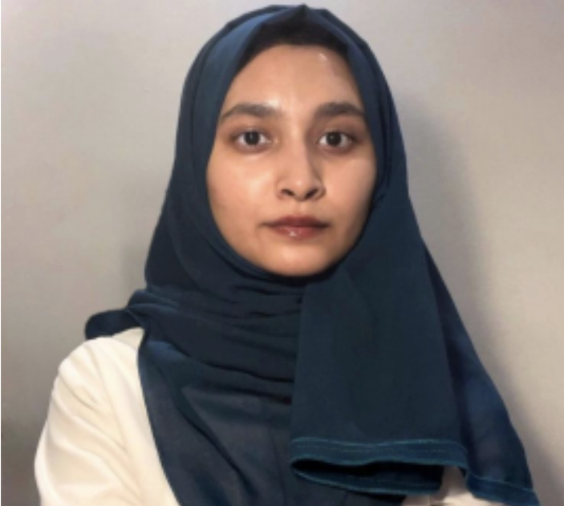

Basila Abdul Latheef
Head of Design
Basila Abdul Latheef is a passionate and detail-oriented student based in Jeddah, Saudi Arabia, with aspirations to enter the field of medicine in Batterjee Medical College. She has taken on several roles in design and event coordination, where she gained experience creating visual content and organizing impactful initiatives.
With a creative eye and a strong sense of purpose, she's excited to contribute to Hearts for Healing as Head of Design and support meaningful causes through her work.